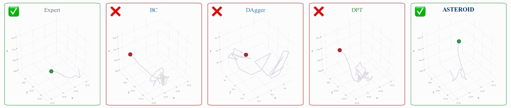
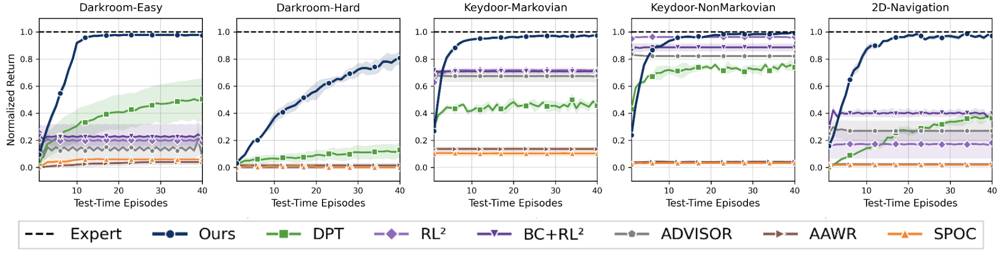

Peg Insertion (sim)
Tactile Pick (sim)
Real Robot
Habitat Navigation
TL;DR
Experts don’t explore, so copying them can’t teach exploration. ASTEROID lets the student do the exploring, and asks the expert only one question: “given what this student has seen so far, what would you do?”
Experts don’t explore. A goal hides behind one of three doors and stays there across episodes. A privileged expert can see it, so it never has to search. A student that can’t see it must try doors and remember what failed.
✓ never searches
✕ guesses, repeats failed doors
✓ rules out, then commits
ASTEROID is simple student–teacher distillation, where the context is generated online by the student, and the answers are queried from the expert.
Learns to rule out failed doors and commit to the right one.
addedchanged
When the hidden state changes within an episode (e.g. a maze where the agent only sees a 3×3 window), the recipe is the same, but per timestep instead of per episode:
Longer timesteps over iterations give a natural context-length curriculum.
The same history gets different answers in different worlds. Trained on all of them, the student learns a distribution over the expert’s answers: it tries the doors that could still be right.
This is just like Bayesian posterior sampling: the student tries each door with the probability that it’s the right one, given everything it has seen.
Wrist-camera peg insertion and tactile-only cube pick. ASTEROID reaches the expert’s level with ~100× fewer environment steps than RL with privileged supervision.

With only a wrist camera, ASTEROID beats Claude Opus 5.5 at peg insertion. Opus mostly fails by never finding the peg.
* Opus receives the history of images and proprioception, and writes perception and controller code online to control the robot.
Trained in simulation, deployed with only joint angles and gripper width. ASTEROID probes, feels for contact, and retries somewhere new. Behavior cloning goes out of distribution after its first missed grasp — its expert never missed.
ASTEROID
BC
Procgen mazes with a 3×3 view, Habitat object search from egocentric images, and 8-dof ant navigation: the policy remembers where it has searched and heads for unexplored places.
On gridworld benchmarks with hidden goals and key-door chains, ASTEROID learns effective exploration and converges to expert performance. Because the policy conditions on its own history, it learns to remember: what it found in earlier episodes (where the key was) carries over and is chained across long horizons.

DAgger collects data from the student but has no context, so it can’t use past failures. DPT conditions on context, but builds it offline, so it must cover every history the student could ever see.
addedchanged in ASTEROID, relative to the selected method
@misc{poddar2026asteroid,
author = {Poddar, Sriyash and Bao, Yanda and Krantz, Jacob and Chang, Matthew and Puig, Xavier and Mottaghi, Roozbeh and Jaques, Natasha and Gupta, Abhishek},
title = {Asymmetric On-Policy Distillation Learns In-Context Exploration},
year = {2026},
}